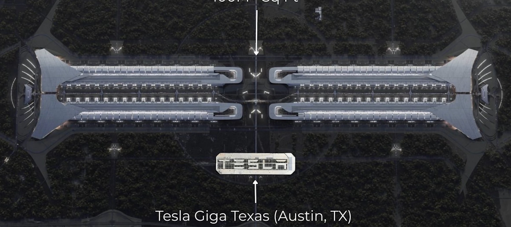
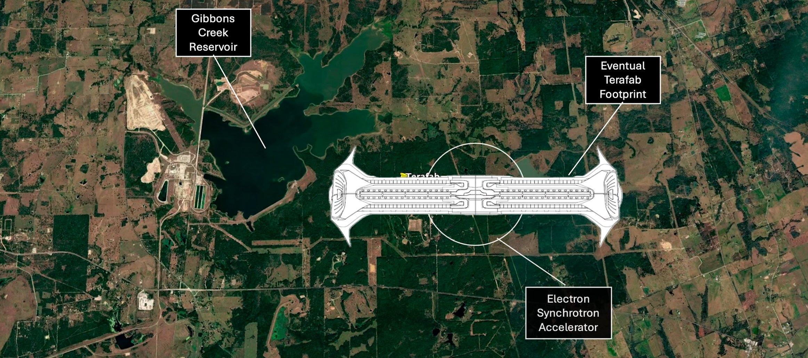
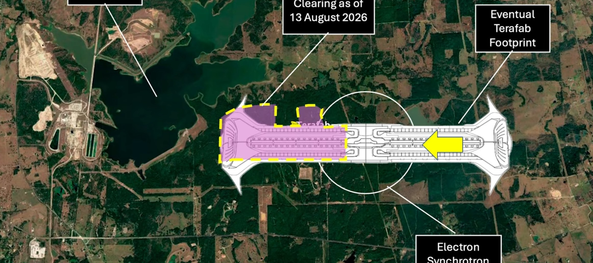
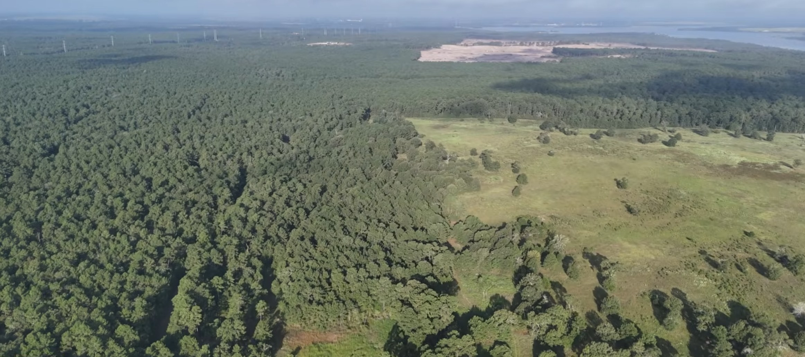
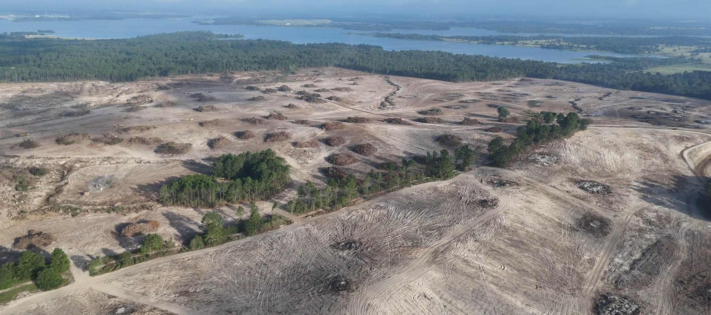
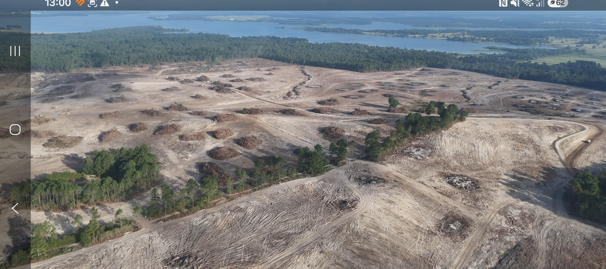

A terawatt chip factory — scale, silicon, and why the world is short of compute
OCN NI Level 2 Diploma in Information TechnologyBy the end of this session you will be able to:
Flip cards, numbered site hotspots, drag-and-drop chips, and the scale calculator all work with a mouse, a keyboard (Enter / Space), or a tap. On a tablet: tap a chip, then tap the bin.
Press S for speaker view. Timing cues in the notes add up to a 60–90 minute lesson.
Every phone, car computer, robot and AI model runs on chips. Foundries such as TSMC, Samsung and Intel already run near capacity. If Tesla, SpaceX and xAI cannot buy enough silicon, Optimus robots, Cybercabs and orbital data centres simply do not ship.
Musk’s line at the launch: “We either build the Terafab, or we don’t have the chips.” That is a supply-chain sentence, not a slogan. Software cannot invent wafers.
Click or press Enter / Space on a card.
Tap to flip
Prototype “advanced technology fab” at Giga Texas. AI5 and AI6 chips for Full Self-Driving, Cybercab and Optimus. Iterate a mask in days, not months.
Tap to flip
Leads the full-scale Grimes County plant. Radiation-hardened D3 chips for Starlink-class craft and orbital data centres that cannot visit a repair shop.
Tap to flip
The training-compute customer. Large language models eat wafers. xAI’s appetite is one reason a terawatt target exists at all.
Tap to flip
Joined April 2026. Process and packaging know-how — including a path toward Intel 14A (1.4 nm) when the full-scale line is ready. Tesla is not pretending to invent lithography overnight.
Planned manufacturing floor. One of the largest factory footprints ever drawn — the night render puts Giga Texas in the gap between the two wings.
Not a terabyte. A trillion watts of AI compute capacity as the annual output target — the “tera” in Terafab.
Prototype beside Giga Texas in Austin. Full-scale plant at Gibbons Creek Reservoir, Grimes County, northwest of Houston.
Published cost figures range from about $17 billion (first cheques) to $55–119 billion (all phases). Treat every dollar figure as reported, not a purchase order you can audit in class.

Concept overlay: Giga Texas sits in the gap. Terafab is the rest of the drawing.
≈ 1,300 football pitches
One Giga Texas is already huge. Ten of them still fit inside the planned Terafab floor.

Eventual footprint east of Gibbons Creek Reservoir, with an electron synchrotron drawn over the centre spine.

Five callouts on the August 2026 overlay. Explore mode explains immediately. Label quiz hides the answer for 1.5 seconds.
Start at 1 — the water — then walk east along the spine.

Before: pine, pasture, a distant scrape, and transmission lines on the skyline.

After: tracks, brush piles, spare tree lines, yellow plant on the pad.
A chip factory is not only cleanrooms. It is first a civil-engineering project: timber, drainage, power corridors, and a neighbour conversation about water and dust.
A normal chip can visit three countries before it is in a product. Terafab’s bet is a recursive loop on one site.
If a test fails on Tuesday, the mask shop is down the corridor. That is the Giga Texas prototype’s job: a few thousand wafers a month to try ideas — not 100,000 wafer-starts on day one.
Drag (or tap a chip, then tap a slot) into order. Check highlights the first wrong step.
Place all six steps, then check.
Drag chips into the right bin — or tap a chip, then tap a bin. Wrong answers shake.
Elon Musk announced Terafab at the retired Seaholm Power Plant in Austin — a former power station, which is a pointed backdrop for a project that will need gigawatts. Intel joined weeks later. Grimes County then approved a tax-abatement package around the old Gibbons Creek steam-plant site. Tesla and SpaceX later confirmed an initial multi-billion-dollar cheque and a 100-million-square-foot plan.
This is an emerging-technology case: a named place, named firms, a public hearing, and neighbours who worry about water, traffic and housing. Assessment work should cite who / where / when, not “a big US factory”.
| Symptom | Likely mix-up | Fix |
|---|---|---|
| “Tera means terabyte” | Confusing storage with power / compute | Tera = trillion. The target is ~1 TW of AI compute per year, not a hard drive |
| “They will replace TSMC next month” | Ignoring process learning and yield | Prototype first (thousands of wafers). Full-scale is a years-long ramp with Intel in the loop |
| “It’s only a Tesla car-chip plant” | Missing the 80% space split | Edge chips for robots and cars; majority capacity for orbital compute |
| “The synchrotron is a physics toy” | Thinking of CERN, not lithography | An electron synchrotron can feed the patterning tools that print nanometre features |
| “Just more warehouses in a field” | Ignoring water, power and cleanrooms | Fabs need ultra-pure water, stable power, and Class-clean air — that is why the reservoir matters |
| “The night picture is a photograph” | Treating a concept overlay as as-built | Label it as a plan. The August 2026 graphic shows clearing, not a finished roof |
Same Earth / orbit bins. Optional timed round stores a best time in this browser.
You are briefing a local councillor who has only seen the night render. Produce a one-page sheet that a non-specialist can read in three minutes.

Six questions. One attempt each. Your score stays in the pill at the top-right.
Score: 0 / 6
What does the “tera” in Terafab refer to?
Which statement about the partners is accurate?
What is the point of putting design, mask, wafer, package and test in one building?
Roughly how is Terafab’s planned output split?
Where is the full-scale Terafab planned?
Why does the site plan show an electron synchrotron on the factory spine?
—
Complete the quiz to see your score
0 / 6
AI products are limited by wafers, water and power — not only by clever prompts.
Design → mask → wafer → package → test, then change the mask. That is the prototype’s reason to exist.
Edge chips for robots and cars are the minority. Orbital compute is the volume story.
The night render is a concept. August 2026 shows clearing beside a reservoir. Caption your evidence.
Cleanroom, test, yield, facilities
RTL, firmware, on-device inference
Power, water, reporting
One page, labelled graphic, one misconception you avoided. Hand in with the evidence checklist ticked.
Take the same site and ask: where does the electricity come from, and what is the water story?
Once a chip exists, it still has to sit on a board with power, cooling and an OS.
Terafab is a bet that silicon, like cars and rockets, can be iterated on one site
Questions · then the one-page briefPowered by A1 Agents - Designs by C4R50N